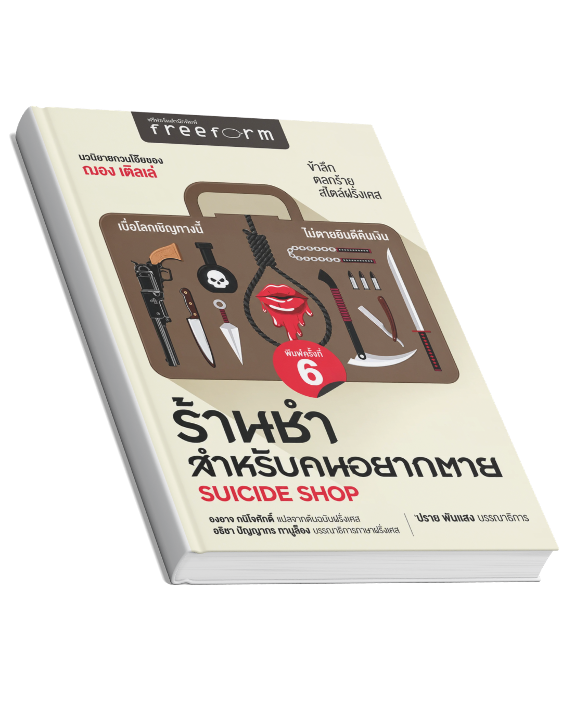
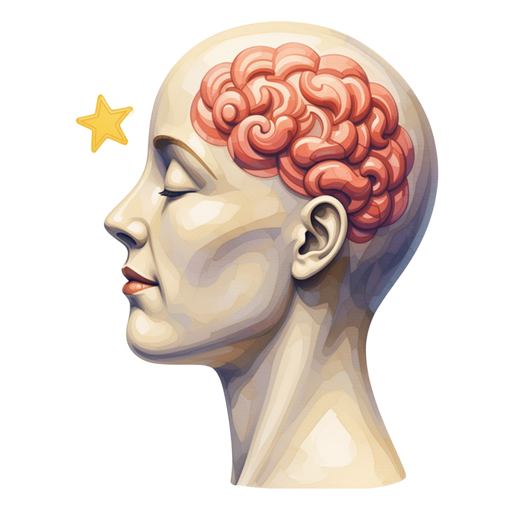
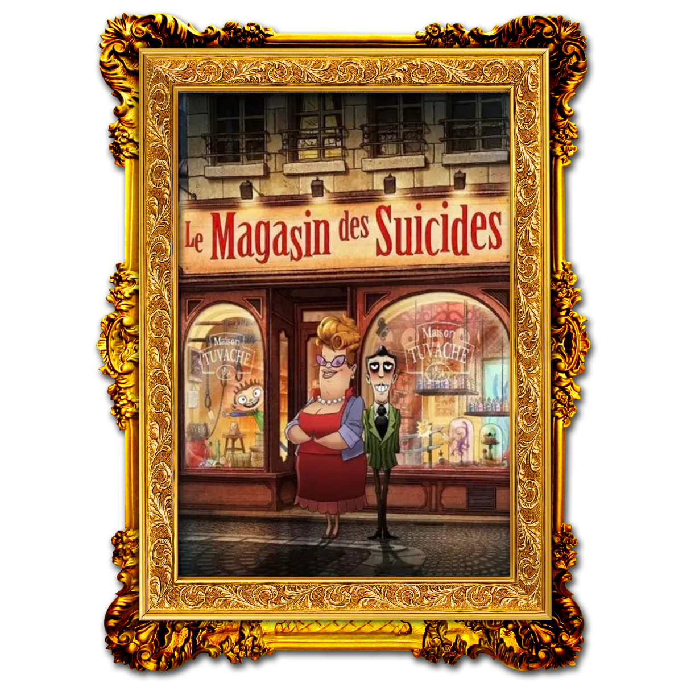
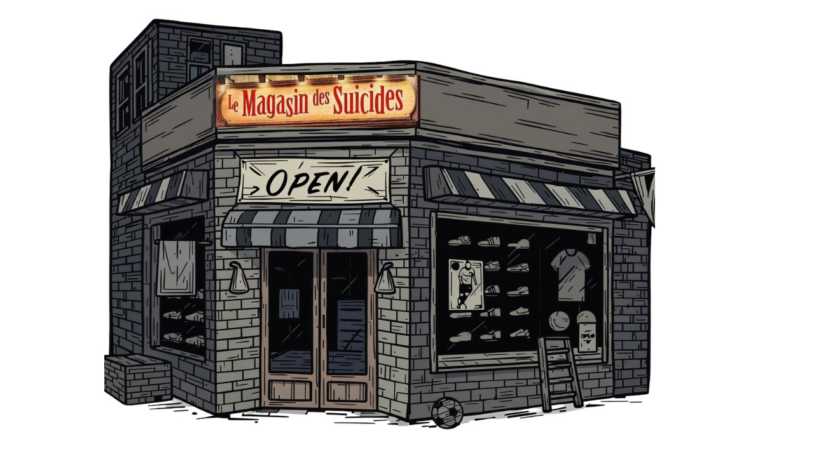

เบื่อโลกเชิญทางนี้ ไม่ตายยินดีคืนเงิน
เสน่ห์เฉพาะตัวที่คุณจะหาไม่ได้จากเล่มอื่น
ความตลกร้าย
จิกกัดสังคมได้เจ็บแสบ

เสียดสีสังคมและจิตวิทยามนุษย์
การปะทะกันระหว่างความสิ้นหวังและความหวัง
แง่คิดชีวิต
ข้อคิดเกี่ยวกับการมองเห็นคุณค่าของการมีชีวิตอยู่
เรื่องย่อ
ในเมืองที่หม่นหมองและผู้คนหมดอาลัยตายอยาก ตระกูลตูว๊าชเปิดร้านขายอุปกรณ์ฆ่าตัวตายสืบทอดกันมาหลายรุ่น สินค้าทุกชิ้นรับประกันความตายสมใจ นำโดยพ่อแม่อย่างมิลดาม และลูเครซ รวมถึงลูก ๆ ที่เศร้าซึมตามตระกูล จนกระทั่ง "อลัน" ลูกชายคนเล็กเกิดมาพร้อมรอยยิ้มและพลังบวกที่กำลังจะเปลี่ยนธุรกิจของตระกูลไปตลอดกาล

แง่คิดที่ได้จากเนื้อเรื่อง
หนังสือเล่มนี้ถ่ายทอดเรื่องราวผ่านมุกตลกร้ายและการจิกกัดเส้นแบ่งระหว่างความเป็นและความตายได้อย่างเจ็บแสบคาย ซึ่งในฐานะผู้อ่าน ความตลกประชดประชันเหล่านี้จะค่อยๆ กระตุกความคิดและทำงานกับจิตใจเราโดยไม่รู้ตัว มันช่วยให้เราได้ย้อนกลับมาทบทวนความหมายของการมีชีวิตอยู่ ได้เห็นว่าความสิ้นหวังหรือความทุกข์ที่เคยรู้สึกหนักหนานั้น สามารถมองผ่านมุมมองใหม่ที่เบาบางลงได้ สุดท้าย หนังสือจะช่วยจุดประกายให้เราตระหนักและมองเห็นคุณค่าของชีวิตตัวเองมากขึ้น รู้สึกโชคดีและอยากยิ้มให้กับชีวิตที่เรายังมีอยู่อย่างแท้จริง
